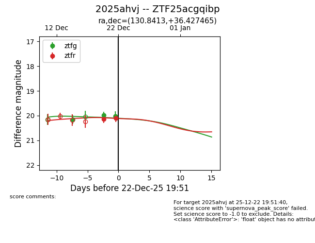
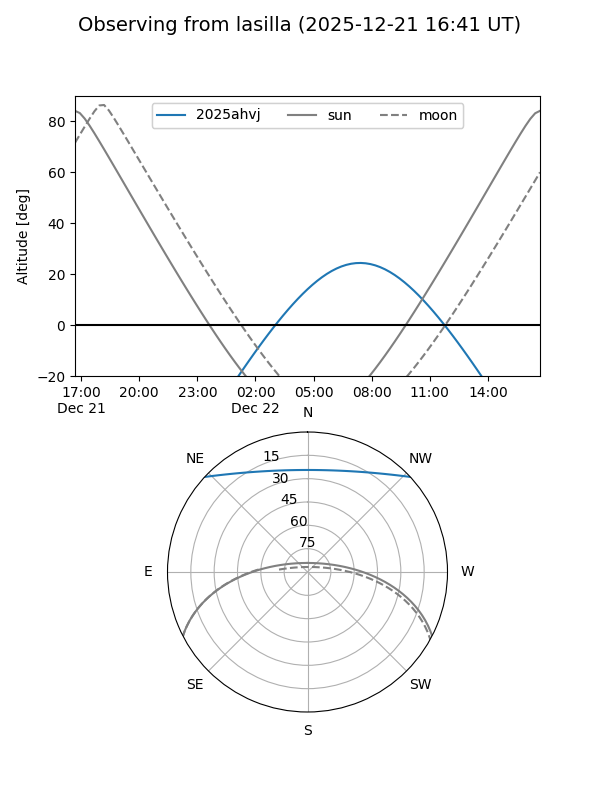
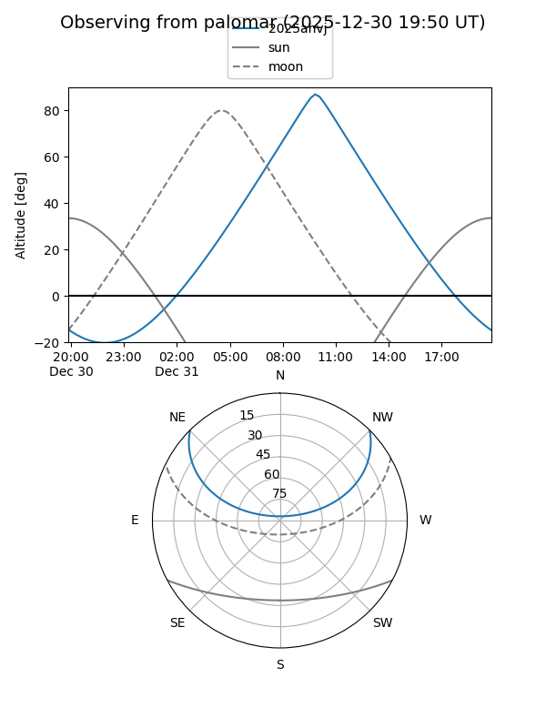
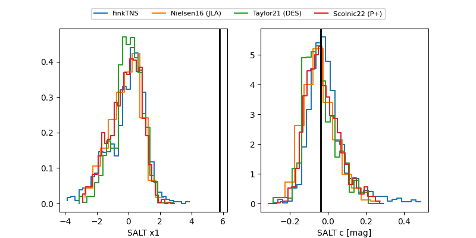

2025ahvj
Target 2025ahvj at 2025-12-31 17:00
Aliases and brokers:
FINK:
Lasair:
ALeRCE:
TNS:
YSE:
alt names
ZTF25acgqibp (ztf,fink_ztf)
2025ahvj (tns,yse)
Coordinates:
equatorial (ra, dec) = 130.8413,+36.42746
equatorial (HMS+DMS) = 08:43:21.92,+36:25:38.87
galactic (l, b) = (186.2983,+37.35488)
Flags:
Photometry:
last ztfg=20.01, ztfr=20.11
3 ztfg, 2 ztfr detections
Lightcurve

Visibility


Additional plots
